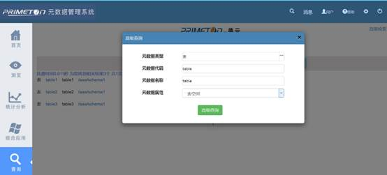

元数据管理系统用户使用手册
元数据管理系统用户使用手册
通用查询功能操作请参考【搜索】章节的功能描述，这里重点介绍高级查询：
1. 进入系统后，左侧导航点击【查询】按钮。
2. 在右侧展示查询页面，点击右上角的【高级检索】，弹出高级检索模态框。
3. 在高级查询中提供四种查询条件，即：元数据类型、元数据代码、元数据名称、元数据属性。填写规范如下：
Ø 【元数据类型】：点击【元数据类型】，选择需要查询的元数据类型，只能选择叶子节点，若选择非叶子节点，系统会给出提示，提供元数据类型搜索功能。
Ø 【元数据属性】：元数据属性与元数据类型关联，选择好元数据类型后点击【确定】，对应的元数据属性也自动生成，可供选择。但并不是所有元数据类型都有元数据属性。如没有默认在该类型下按条件搜索。
Ø 【元数据名称】、【元数据代码】根据查询需求填写。
4. 条件填写完毕后，点击【高级查询】，跳转至结果页面。操作示意图如下：
